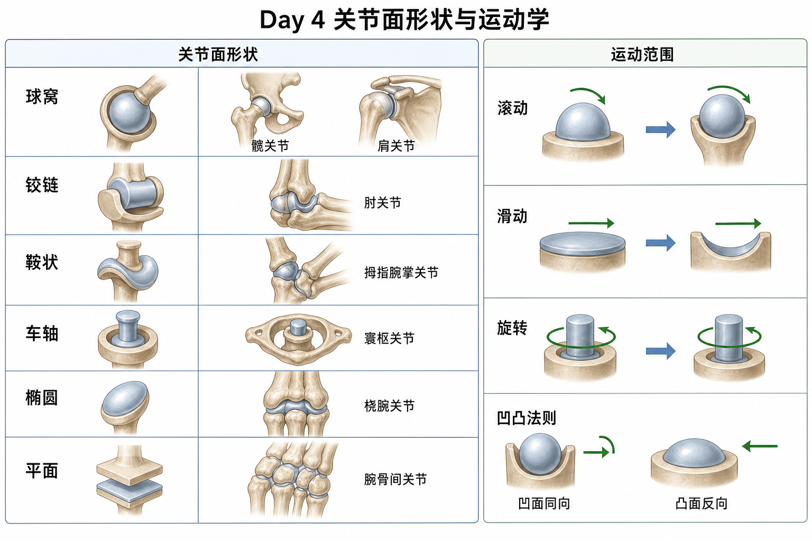

关节面形状是动作的“硬件设定”。肌肉可以拉，但它不能让铰链关节变球窝；训练中动作受限，不一定是肌肉紧，也可能是骨性结构、关节面配合或关节滑动不够。
两块骨接触面像机械零件：球放进窝里能多方向转，门轴只能开合，平面只能滑。肌肉负责拉动骨，但骨面形状先决定“能不能这么动”。
训练含义动作受限不能只怪肌肉紧。比如有人深蹲髋屈到一定角度就卡住，可能和髋臼深度、股骨颈角度、踝关节结构都有关。
肩关节盂浅，活动大但稳定低；髋臼深，稳定高但活动相对受限。两者都是球窝，但策略不同。
训练含义肩要“先控再强”：肩袖、肩胛、胸椎都要配合。髋要“活动度+力量”双管齐下：深蹲硬拉需要髋能屈伸，也要能承重。
误区❌肩和髋都是球窝，所以训练方法一样。✅肩偏灵活，髋偏稳定，风险和重点不同。
肘是典型屈伸关节；膝是改良铰链，主要屈伸，但在屈伸末端有少量旋转和滚滑配合。
训练含义肘弯举重点是控制屈伸轨迹；膝训练重点是对线和减少异常扭转。深蹲膝盖不是完全不能前移，而是要跟脚和髋的运动协调。
| 形状 | 代表 | 训练意义 |
|---|---|---|
| 鞍状 | 拇指腕掌关节 | 握力、抓握、对掌 |
| 车轴 | 寰枢关节、桡尺近端 | 转头、前臂旋前旋后 |
| 椭圆 | 桡腕关节 | 腕屈伸和偏移，卧推手腕中立 |
| 平面 | 腕骨间、肩锁关节 | 小幅滑动，配合大动作 |
膝屈伸时股骨髁会在胫骨平台上滚。肩外展时肱骨头也会产生滚动。滚动让骨发生角度变化，但单靠滚动会让关节面“滚出边界”。
训练含义动作看起来是骨在摆动，内部关节面还要维持接触和居中。卡住、夹挤、不稳，可能是滚滑比例出了问题。
滑动像两块玻璃贴着错开。肩外展时肱骨头向上滚，同时必须向下滑，才能避免过早顶到肩峰下空间。
训练含义肩外展夹挤感，不一定是三角肌弱，也可能是肱骨头下滑不足、肩胛上旋不足、胸椎伸展不足共同造成。
寰枢关节摇头、前臂旋前旋后，是真旋转。手腕绕圈看起来像旋转，实际上多是腕屈伸和尺桡偏组合，真正旋前旋后来自前臂桡尺关节。
训练含义壶铃、引体、划船里，前臂旋转能力影响握姿和肩肘压力。腕不舒服时，不要只看腕，也要看前臂旋转。
如果移动的是凹面，关节面滑动方向和骨运动方向相同；如果移动的是凸面，滑动方向和骨运动方向相反。
真实例子肱骨头是凸面，肩外展时肱骨向上运动，肱骨头需要向下滑。胫骨平台是凹面，坐姿伸膝时胫骨向前动，滑动也向前。
训练含义这个规则是理解关节松动术、动作受限和夹挤的关键。教练不一定手法治疗，但要知道“骨怎么动”和“关节面怎么滑”不是一回事。
❌ 深蹲蹲不下去一定是腘绳肌紧。✅ 也可能是髋臼、股骨颈、踝背屈、关节滑动等因素。
❌ 看到关节绕圈就以为是真旋转。✅ 很多绕圈是多个平面动作组合。
❌ 只训练肌肉力量就能解决所有关节问题。✅ 关节面配合、稳定控制、活动度也要看。
1. 肩外展时肱骨头通常需要?
2. 肘关节最接近哪种关节面?
3. 多选: 哪些属于关节运动学三要素?
4. 案例: 学员侧平举 70° 后肩峰下夹痛，你会想到什么?